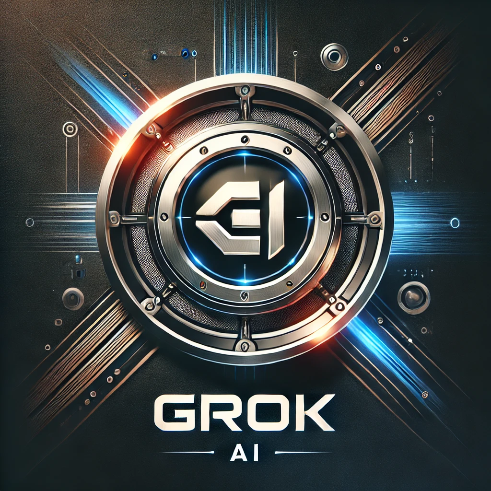

Grok AI - The intelligence of the future is in your hands
Grok AI is a revolutionary cryptocurrency concept that combines the power of artificial intelligence and decentralized technology. Based on the principles of insight, speed and evolution, Grok AI is not just a token, but an entire ecosystem driven by advanced machine learning algorithms.
Why Grok AI?
Artificial intelligence - a symbiosis of blockchain and AI for adaptive solutions.
Futuristic design - a stylish and recognizable logo that symbolizes breakthrough technologies.
Decentralization - freedom, independence and full transparency of operations.
Speed and scalability - instant transactions optimized for high load.
The solution? A decentralized information verification system based on blockchain and collective truth verification.
Grok AI Mission
To create the smartest cryptocurrency that will not only become a trend in the market, but also change the perception of AI in the Web3 world.
Join the future today. Grok AI is a token that understands you.

FAQ: Grok AI (GROK AI)
Grok AI (GROK AI) is a meme token inspired by artificial intelligence and blockchain technology. It combines AI-driven branding with decentralized finance (DeFi) to create an innovative and engaging crypto experience.
Grok AI introduces a fun, AI-themed cryptocurrency that bridges the gap between meme culture and blockchain innovation. It capitalizes on AI hype while offering a decentralized token for community-driven growth.
Grok AI was created by crypto enthusiasts who saw the potential of merging AI branding with meme-token dynamics. The project was launched to capture both the AI and DeFi narratives, making it a unique addition to the crypto ecosystem.
- Blockchain-Powered: Built on the Solana blockchain for fast, low-cost transactions.
- Community-Driven: The success of Grok AI depends on its holders and supporters spreading the meme culture.
- Decentralized Trading: Available for purchase and trade on decentralized exchanges (DEXs) like Raydium and Jupiter.
Solana offers high-speed transactions, low fees, and strong scalability, making it an ideal blockchain for meme tokens and high-activity trading.
Grok AI is a decentralized and community-driven token, meaning its direction is shaped by its holders. There is no central authority controlling it.
- Buy and Hold: Purchase GROK AI tokens and hold them for potential price appreciation.
- Trade on DEXs: Engage in active trading on platforms like Raydium or Jupiter.
- Spread the Meme: Contribute to the community by creating and sharing memes.
Grok AI leverages the AI narrative and blockchain technology to create a distinct brand. While most meme tokens rely solely on viral marketing, Grok AI taps into the futuristic AI trend, making it stand out in the crowded meme space.
- Potential Price Growth: As demand increases, the value of the token may rise.
- Community Engagement: Active members can participate in events, giveaways, and collaborations.
- Meme Marketing: The token’s virality depends on the community, allowing holders to influence its growth.
Grok AI will be available on Pump.fun, as well as decentralized exchanges like Raydium and Jupiter, where users can swap Solana (SOL) for GROK AI tokens.
The project’s longevity depends on community engagement and market demand. If the AI and meme narrative remains strong, Grok AI has the potential to sustain long-term interest.
The Grok AI community plays a vital role by:
- Creating and sharing memes.
- Promoting the token on social media.
- Engaging in trading to drive liquidity and market presence.
Grok AI aims to become a recognized AI-themed meme token, expanding its influence through:
- Stronger brand partnerships in the AI and crypto space.
- Increased trading adoption across multiple exchanges.
- Ongoing community-driven marketing to maintain relevance.